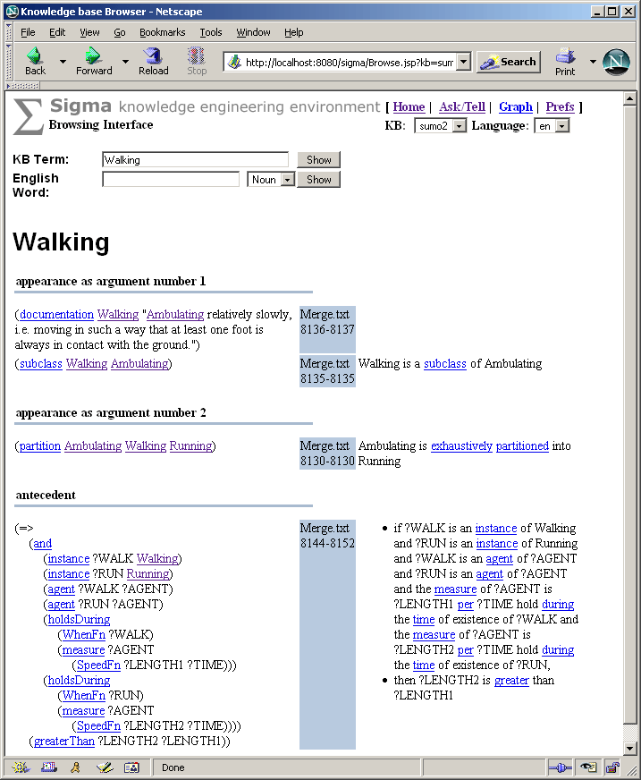

Sigma Knowledge Engineering Environment
The Sigma knowledge engineering environment is an system for developing, viewing and debugging theories in first order logic. It works with Knowledge Interchange Format (KIF) and is optimized for the Suggested Upper Merged Ontology (SUMO).
Sigma includes a number of useful features for knowledge engineering work, including term and hierarchy browsing, the ability to load different files of logical theories, a full first order inference capability with structured proof results, a natural language paraphrase capability for logical axioms, support for displaying mappings to the WordNet lexicon and a number of knowledge base diagnostics.

Project Documentation